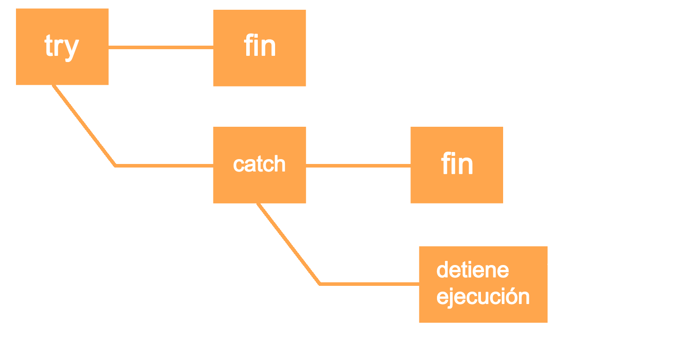
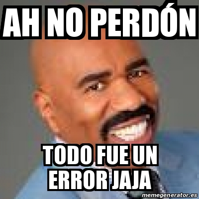

Errores y Excepciones en

El tipico try / catch pero en python
por Miguel Rodriguez
Los errores de sintaxis, también conocidos como errores de parsing, son quizás el tipo más común de queja que obtienes mientras todavía estás aprendiendo Python:
>>> while True print 'Hello world'
File "stdin", line 1
while True print 'Hello world'
^
SyntaxError: invalid syntax
Error cortesía de Python Docs.
El analizador repite la línea ofensiva y muestra una pequeña "flecha" ^ que apunta al primer punto en la línea donde se detectó el error. El nombre del archivo y el número de línea se imprimen para que sepa dónde buscar en caso de que la entrada provenga de un script.
pero aun si las sentencias son sintacticamente correctas se puede causar un error y es ahi donde entran en juego las excepciones:
>>> while True:
... try:
... x = int(input("ingrese un numero: "))
... break
... except ValueError:
... print ("Oops! no es numero. intente de nuevo...")
...
asi funciona el ciclo de vida de una excepción.
Una instrucción try puede tener más de una cláusula except, para especificar manejadores para diferentes excepciones, de la misma manera una cláusula except puede nombrar múltiples excepciones en una tupla:
... except (RuntimeError, TypeError, NameError):
... pass
para acceder al detalle de una excepción tenemos la posibilidad de almacenar la excepción en una variable
>>> def this_fails():
... x = 1/0
...
>>> try:
... this_fails()
... except ZeroDivisionError as detail:
... print ('Handling run-time error:', detail)
...
Handling run-time error: integer division or modulo by zero
Planteando Excepciones
La declaración raise permite al programador forzar una excepción especificada para que ocurra.
>>> raise NameError('HiThere')
Traceback (most recent call last):
File "stdin", line 1, in module
NameError: HiThere
Si necesita determinar si se generó una excepción pero no tiene la intención de manejarla, entonces hay una manera mejor de hacerlo
>>> try:
... raise NameError('Hola')
... except NameError:
... print ('Una excepción ocurrió!')
... raise
...
Una excepción ocurrió!
Traceback (most recent call last):
File "stdin", line 2, in module
NameError: Hola
Excepciones definidas por el usuario
Por lo general, las excepciones se deben derivar de la clase Exception
>>> class MyError(Exception):
... def __init__(self, value):
... self.value = value
... def __str__(self):
... return repr(self.value)
...
>>> try:
... raise MyError(2*2)
... except MyError as e:
... print ('My exception occurred, value:', e.value)
...
My exception occurred, value: 4
por ultimo pero no menos importante las Clean-up Actions
>>> def divide(x, y):
... try:
... result = x / y
... except ZeroDivisionError:
... print ("division by zero!")
... else:
... print ("result is", result)
... finally:
... print ("executing finally clause")
>>> divide(2, 1)
result is 2
executing finally clause
>>> divide(2, 0)
division by zero!
executing finally clause
>>> divide("2", "1")
executing finally clause
Traceback (most recent call last):
File "stdin", line 1, in module
File "stdin", line 3, in divide
TypeError: unsupported operand type(s) for /: 'str' and 'str'